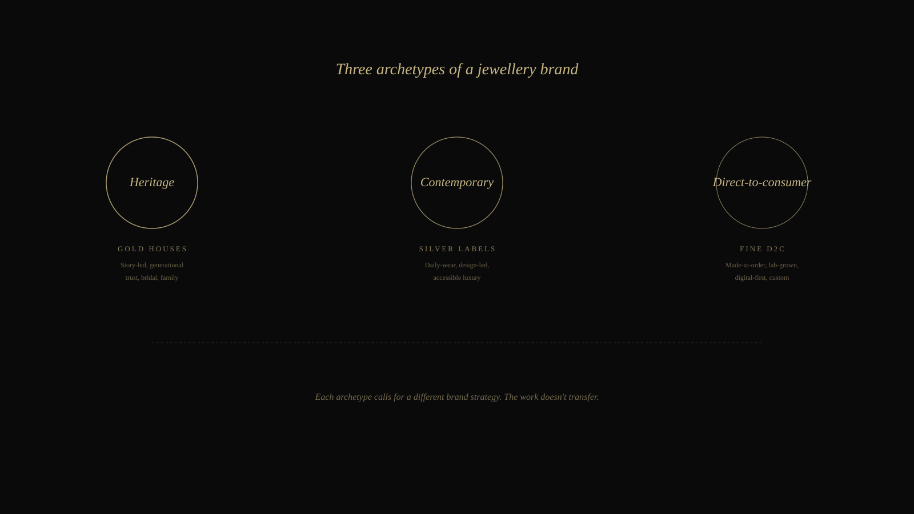
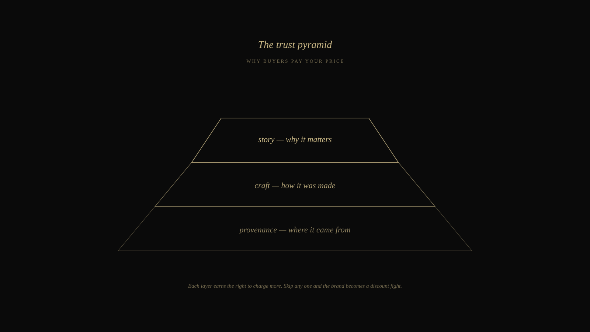

A branding agency playbook for jewellery brands in India.
A working playbook for jewellery brands across India — heritage gold houses, contemporary silver labels, and direct-to-consumer fine jewellery. Identity, packaging, photography, story and the discoverability that turns a piece into a brand people ask for by name.
India's jewellery sector is enormous and accelerating. The domestic market is worth roughly US$ 85 billion in 2025, projected to reach US$ 130 billion by 2030. Total gem and jewellery exports stand at around US$ 27.72 billion a year. Silver jewellery exports surged 52% year-on-year in FY 2025-26. Studded gold grew 6%. India processes more than 90% of the world's cut and polished diamonds. Surat alone has over 450 organised jewellery exporters. By volume and value, India is one of the most important jewellery economies in the world.
And yet, ask a buyer in Mumbai or Dubai or London to name three modern Indian jewellery brands they trust by name, and the list runs short. They'll mention one or two heritage houses — Tanishq, Tribhovandas Bhimji Zaveri, Kalyan. After that, things blur. Hundreds of skilled jewellery houses sell pieces of genuine craft and yet remain anonymous outside their immediate region. Most are competing on per-gram price plus a cousin's referral. None of that is brand building.
This page is how we think about brand building for jewellery brands. It is a category we know well — both because our case studies in jewellery have spanned heritage gold houses transitioning into silver, and because Rajasthan, where we sit, has historically been one of India's most important coloured-gemstone and silver-jewellery clusters. The question worth asking yourself by the end of this page is the same one we ask in our first meeting: what story are buyers telling themselves when they wear what you make? Because that story — not the metal, not the design — is what gets paid for.
Why jewellery is one of the most brand-sensitive categories
Other product categories sell utility. Jewellery sells a feeling — confidence, belonging, memory, status. The piece itself is necessary but not sufficient. What gets paid for is the meaning around the piece: who made it, why it exists, what it says about the wearer. Two rings of identical metal, gemstone and weight can sell at radically different prices, and the only difference is the brand wrapped around them.
This is also why jewellery is one of the categories where weak branding hurts most. A jewellery business without a brand is selling commodities by weight and craft hours. A jewellery brand that has built equity is selling stories — and stories carry margin. Over five years, the difference between these two operations is significant, and almost entirely a function of brand investment, not gem quality.
What makes jewellery branding particular — different from, say, cafés or hospitality — is the trust requirement. Buyers are spending serious money, often as gifts, often on pieces they cannot inspect physically before paying. Trust isn't a soft attribute here. It's the entire purchase decision. Every part of the brand has to compound that trust: the website, the photography, the unboxing, the first interaction with a sales person, the ease of returning, the quality of the certificate. Any one of these going wrong cracks the trust faster than in any other consumer category.
Three archetypes of a jewellery brand
Before we recommend any work, we figure out which archetype the jewellery brand is — because the work doesn't transfer between them. A strategy that works for a heritage gold house often fails on a contemporary silver label, and vice versa.

Three archetypes. Different audiences. Different brand work.
Archetype one: heritage gold houses
Generations of buyers, family-name recognition, deep local trust. The brand work for these houses is rarely about building from zero — it's about modernising without breaking the equity. The next generation of buyers expects an English-first website, Instagram that doesn't look like a 2014 catalogue, and content that the previous customers' children can engage with. The challenge is doing all of this without diluting what the older generation values. The most common mistake we see is heritage houses hiring a slick D2C agency that overhauls the entire brand and accidentally erases what made it valuable. The right work is surgical — preserve the equity, modernise the surface, extend into new product lines that don't compete with the bridal core.
Archetype two: contemporary silver labels
This is the fastest-growing segment in Indian jewellery — silver as daily-wear, design-led, accessible luxury. Silver jewellery exports grew over 52% year-on-year in FY 2025-26, the strongest growth in the entire jewellery category. The brand work here is almost entirely about positioning and design discipline. The product is by definition lower-margin than gold, so the brand has to do extra work to justify pricing. Photography, packaging, social presence, and a clear point of view about what the brand stands for matter more than scale. We've watched a small silver label with a sharp positioning out-earn larger competitors who have ten times the inventory but no brand conviction.
Archetype three: direct-to-consumer fine jewellery
The newest archetype, growing alongside India's digital-first generation. Made-to-order custom pieces, lab-grown diamonds, and bespoke services delivered through clean websites and concierge messaging. The brand work here is about trust at scale — buyers can't visit a showroom, so every digital touchpoint has to substitute for that physical assurance. Provenance documentation, certifications, founder visibility, and content that lets a buyer feel the workshop without standing in it. This is where photography and editorial content matter most, because they are the only proof a buyer has before paying.
Most jewellery brand failures we've seen are archetype mismatches — applying D2C tactics to a heritage house, or trying to sell heritage romance from a fine D2C label that doesn't have the years to back it up. The first job is figuring out which archetype the brand actually is, and then doing the work that fits.
The trust pyramid
Whatever the archetype, every successful jewellery brand we've worked with is doing the same three things underneath, in order: establishing provenance, demonstrating craft, and telling a story worth caring about. We think of these as a stacked pyramid because each layer earns the right to charge more. Skip any one, and the brand becomes a discount fight.

Provenance → Craft → Story. The three layers that earn the price.
Layer one: provenance
Where does the metal come from? Where are the stones sourced? Who certifies what? This is the foundation, and most jewellery brands skip it entirely on their website — the buyer has to ask through DM or WhatsApp. Brands that publish their provenance clearly — recycled gold, traceable diamonds (lab-grown or natural), gemstone certifications, sourcing partners — earn trust faster and command higher prices. GJEPC certifications, BIS hallmarks, GIA reports — all of these are trust assets. They should be visible, not buried.
Layer two: craft
Who is making the piece, and how? This is the layer where photography and content do the heavy lifting. Documentation of the workshop, the karigar at work, the casting and setting and polishing — these are not behind-the-scenes nice-to-haves. They are evidence that the price is justified. The brands that consistently outperform their competitors are the ones whose Instagram looks more like a National Geographic feature than a shopping catalogue. Craft demonstration is also one of the few content categories that algorithms reward heavily — slow, close-up footage of skilled hands holds attention longer than product photography ever will.
Layer three: story
Why does this brand exist? What does the wearer become when they put the piece on? This is the layer most jewellery brands underinvest in — and it's the one that determines whether the buyer will pay your price or the competitor's. A piece without a story is a commodity. A piece with a story is a memory. We work with brands to build their narrative system: founding story, design language, vocabulary, and the editorial cadence that makes the story feel lived rather than pasted on.
One label we worked with had spent years building a strong product but was selling at the same price as competitors with weaker craft. Three weeks into our engagement, we identified that their entire story-layer was missing — the founder's journey, the workshop philosophy, the specific intention behind the design language. We rebuilt their narrative system, redid the photography, and rewrote every product description from a story-first frame. Six months later, average order value had moved meaningfully upward without any change to the actual products. Brand had simply caught up to what the work deserved.
Every jewellery brand sells the same metal as ten others. The story is what gets paid for.
— A working principle in our jewellery engagements
What we deliver — the full stack
Jewellery is one of those categories where most brands juggle five vendors — a freelance photographer, a separate packaging designer, a website agency, a social manager, and a paid-ads consultant. The five rarely coordinate. The result is a brand that splinters across platforms. We do this under one roof so the visual library, the packaging, the website, and the social all draw from the same brand decisions.
Strategy & identity
Three to five weeks of close work. Workshop visits, conversations with the founder and master craftspeople, audits of past collections, and conversations with a sample of past buyers. Output: positioning, brand narrative, archetype clarification, competitive landscape, vocabulary system, and a complete identity system — logo, monogram, type system, colour palette, photography direction, voice and writing guidelines.
Identity, packaging & product photography
The deliverable layer where jewellery branding lives or dies. Packaging that justifies the price the moment a box opens. Product photography that holds up at full zoom on a buyer's phone screen. Lifestyle and editorial photography that builds desire on Instagram. Catalogue and lookbook design for press and trade. Our in-house photography studio handles all the imagery — the lighting discipline that turns a piece into a brand asset is the visible upgrade that separates a brand from a vendor.
Website, content & reach
Website built for both desire and trust — fast, beautifully photographed, with provenance and certifications visible. SEO scoped for jewellery-relevant intent — "sterling silver brand India", "custom diamond ring online India", "heritage jewellery house Jaipur". Instagram and Reels content systems. WhatsApp Business setup for the inevitable bespoke inquiries. Newsletters that keep past buyers warm. Quarterly performance reviews looking at average order value, repeat-purchase rate, and the share of inquiries arriving through brand search rather than category search — all the metrics that actually matter for jewellery, not just impressions.
The regions we work with
Our office is in Udaipur — close to Jaipur, the world's coloured-gemstone capital, and within India's broader jewellery heartland. Our jewellery work has spanned Jaipur (gemstones, silver, contemporary fine jewellery), Mumbai (the western-region exporting hub), Surat (the world's diamond cutting centre with over 450 organised exporters), Hyderabad (heritage pearl and gold), and Coimbatore (a growing manufacturing hub in the south).
For exporters, the work extends to building English-first websites, content for trade-show outreach, and discoverability scoped for buyers in the United Arab Emirates, Hong Kong, the United States, the United Kingdom, Australia and Canada — which together account for the overwhelming majority of India's jewellery export volume. The UAE, in particular, has overtaken the US as India's largest jewellery export destination, supported by the India-UAE Comprehensive Economic Partnership Agreement.
We aren't a generalist agency that took on a jewellery client once. We've built the playbook because the category needs it, because Rajasthan is home to some of India's strongest jewellery clusters, and because the work compounds — the second jewellery engagement is faster than the first.
— Frequently asked
Questions we hear often.
How is brand building different for a heritage jewellery house versus a new D2C label?
Completely different. A heritage house already has the trust — generations of buyers, a name people recognise. The brand work there is about modernising without breaking the equity: digital presence, English-first content for the next generation, new product lines that extend the house without diluting it. A new D2C label has the opposite problem — design is often strong, but trust has to be built from zero. There the work is about provenance proof, craft documentation, photography that holds up to scrutiny, and a content cadence that earns belief over six to twelve months.
Why do jewellery photographs make such a difference to sales?
Because for most buyers, the photograph is the first and sometimes only experience of the piece before they pay. A poorly lit photograph of a fine ring shrinks the perceived value by a factor of two or three — the buyer subconsciously discounts the product to match the image quality. Conversely, jewellery shot well is the cheapest premium-positioning tool a brand has. We treat jewellery photography as core brand-building work, not as catalogue production. The difference shows up in average order value within the first quarter.
Does packaging really matter, or is it just an expense?
It matters more in jewellery than in almost any other category. The unboxing is part of the product. For gift purchases — which are a large share of jewellery — the packaging is often the gift. We've watched well-designed packaging earn a brand 30-second Instagram unboxing reels organically posted by buyers, which then bring new customers. The cost of designed packaging is recovered many times over in the marketing it generates without being asked for.
Do you work with jewellery brands outside Rajasthan?
Yes. We're based in Udaipur and work closely with the Rajasthan jewellery cluster — particularly Jaipur, the world's coloured-gemstone capital. But our jewellery engagements span Mumbai, Surat (the diamond hub), Hyderabad, Coimbatore, and the broader Indian jewellery ecosystem, plus international labels marketing into India. For exporters, we also handle English-first websites and content scoped for buyers in the UAE, the US, the UK, Australia and Hong Kong — which together account for the majority of India's jewellery exports.